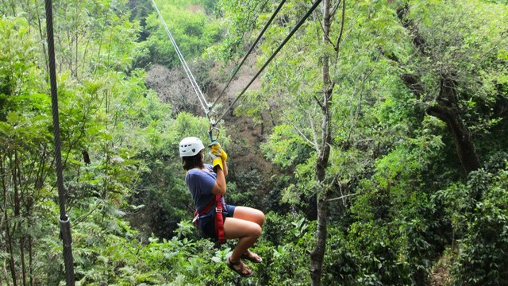
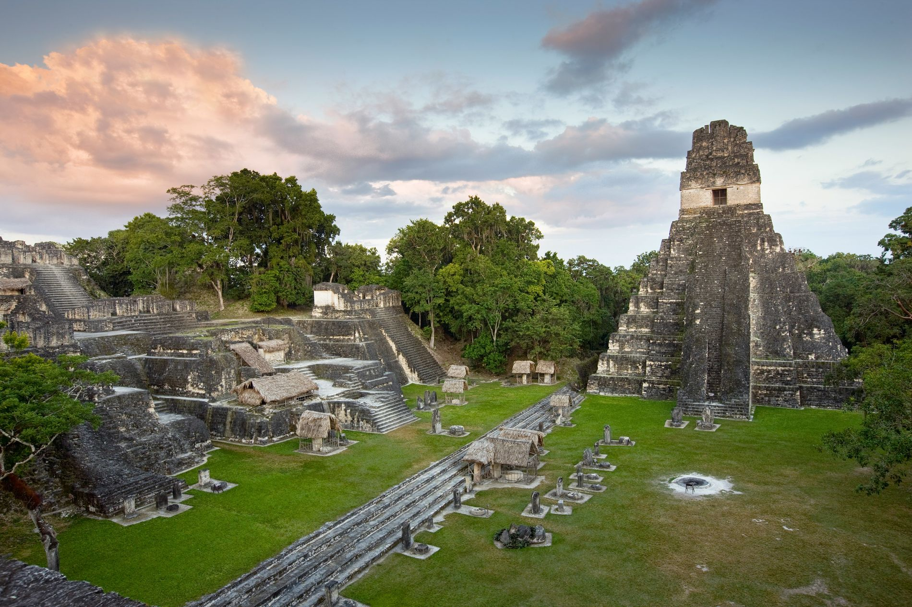

Cataratas
El Balneario Las Cataratas, es un paraíso en Petén, la cual ofrece diversidad de atractivos para los visitantes nacionales y extranjeros, que llegan para tener un contacto con la naturale
Leer Màs

Canopy Tour Tikal
Canopy Tours Tikal es considerado como uno de los paseos más divertidos en un encuentro frontal con la naturaleza. Está considerado como uno de los paseos más divertidos y sobre todo educativos porque el visitante logra un encuentro frontal con la naturaleza
Leer Màs

Parque Nacional Tikal
El Parque Nacional Tikal en Flores Petén declarado Patrimonio de la Humanidad y es la ciudad maya más grande e importante de la historia que se ha descubierto hasta la fecha.
Last updated 3 mins ago
Leer Màs